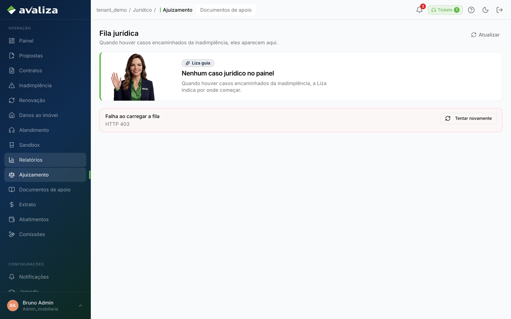
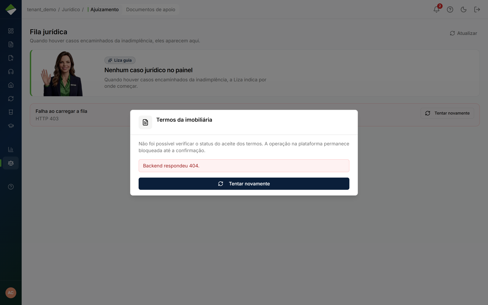
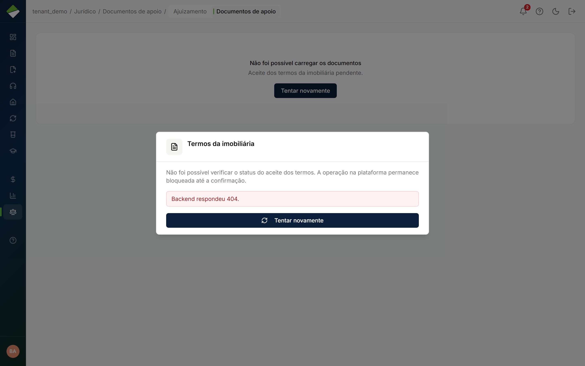

Tratar no jurídico · jornada independente
Ajuizamento na loja
Dono do resultado: Imobiliária — Responsável da loja (corretor e gestor)
- Gatilho
- Gestor/corretor abre Jurídico da imobiliária — acompanhar, não ajuizar no lugar da Avaliza.
- Resultado
- Loja vê o processo e pega documento de apoio.
- Lifecycle
- Mesmo processo jurídico, superfície e dono diferentes.
- Atores na operação
- Gestor da imobiliária
admin_imobiliaria - Corretor
corretor
- Gestor da imobiliária
- Dono (setor)
- Imobiliária
- Outros setores
- Ninguém além do dono
Entra de
em paralelo Exoneração (Avaliza) Mesmo processo, superfície da imobiliária · dono: JurídicoSai para
Não dispara outra jornada. O ciclo acaba aqui.
Sem linha do tempo forçada
Este ciclo não tem etapas ordenadas. A tela abaixo é evidência, não passo 1 de N.
Telas (evidência)
Superfícies atuais onde este ciclo aparece. Abrir a tela não significa avançar uma etapa.

/minha-imobiliaria/juridico · evidência, não etapa
/minha-imobiliaria/juridico · evidência, não etapa
/minha-imobiliaria/juridico/documentos-de-apoio · evidência, não etapaIsto não é esta jornada
- Não usar /juridico/tarefas — isso é mesa Avaliza.